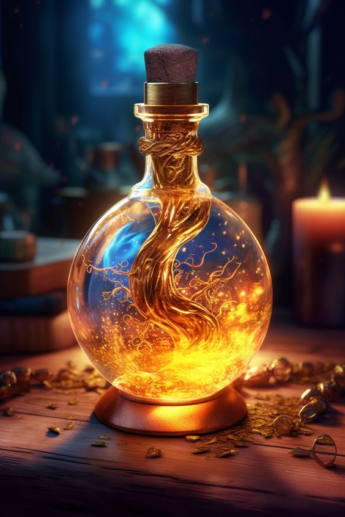
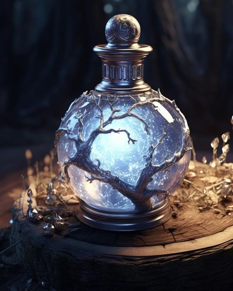
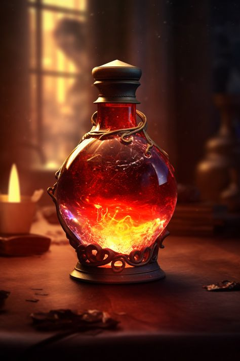
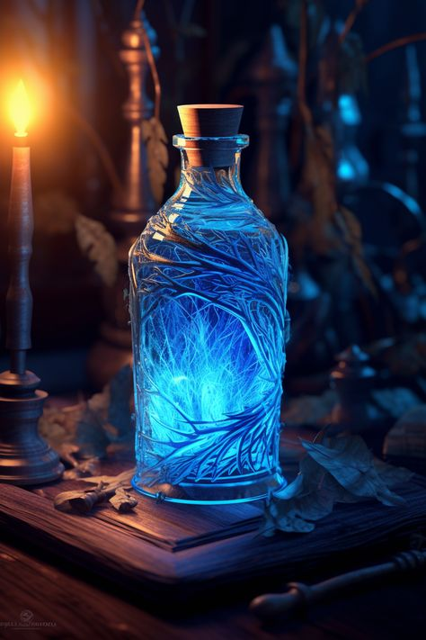

| POTIONS | Ingredients | Effects | Customer Review |
|---|---|---|---|
| Kicker Elixer | Starlight, Water, Stardust, Lavender, Caffeine | Helps you take on the day and enhances positive emotions. | 9.4/10 price- $70.7 for each potion |
| Relaxing Brew | Feather Extract, Spring Water, Ground Magical Rocks, Sugar, Dandelion leaf | Helps you rest while adding a magical touch to your life. Also, help with positive dreams. | |
| Magical Mist | Daisies, Lemon Balm, Seashell tear drops, A cup of water from the ocean | It helps restore energy and gives extra stamina. | 9.5/10 price-$40.46 |
| Ancient Essense | Rose Petals, Nectar, A leaf from a daisy, Three drop sof rain from the sky | It helps fight against chilly weather and helps you boost courage and confidence. | 10/10 price- $30.39 |
All our most popular potions are filled with amazing, enchanting ingredients. Each incorporates aspects of nature and other mystical things out there. Out of all the potions mentioned, each one takes up to three weeks to create due to the rarity of the ingredients. There are many things that take an exceptionally long time to get.
We choose to get the best products possible because our customers have gotten the best results from them. Please explore our collection of diverse potions that help with emotions and other everyday struggles. Each potion is blended with care, and we try to find the best ingredients possible for you.
We have numerous potions that not only can boost your energy but also make you feel realized when needed. All you must do is choose a potion that fits your preferences, experience the magical capabilities, and let magic fill your life with positive moments.